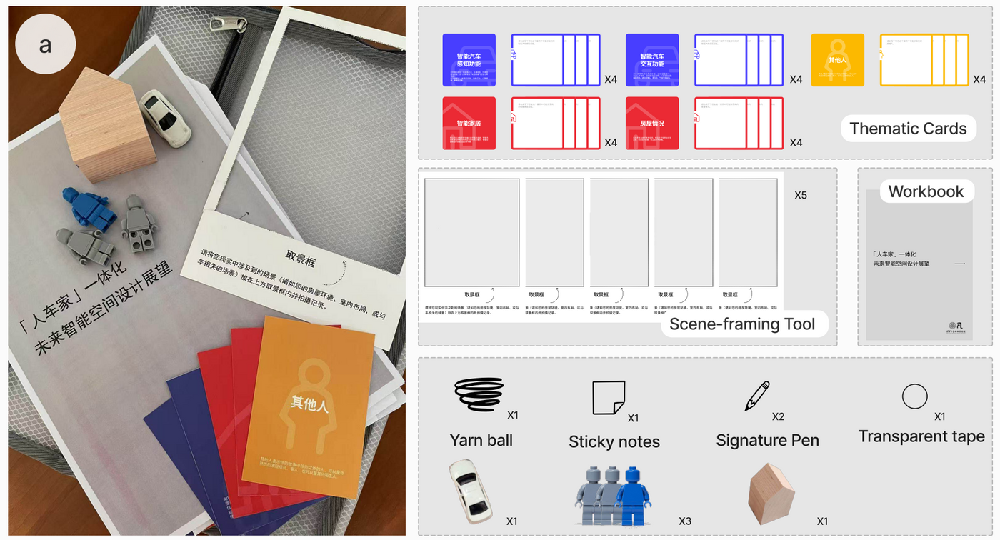
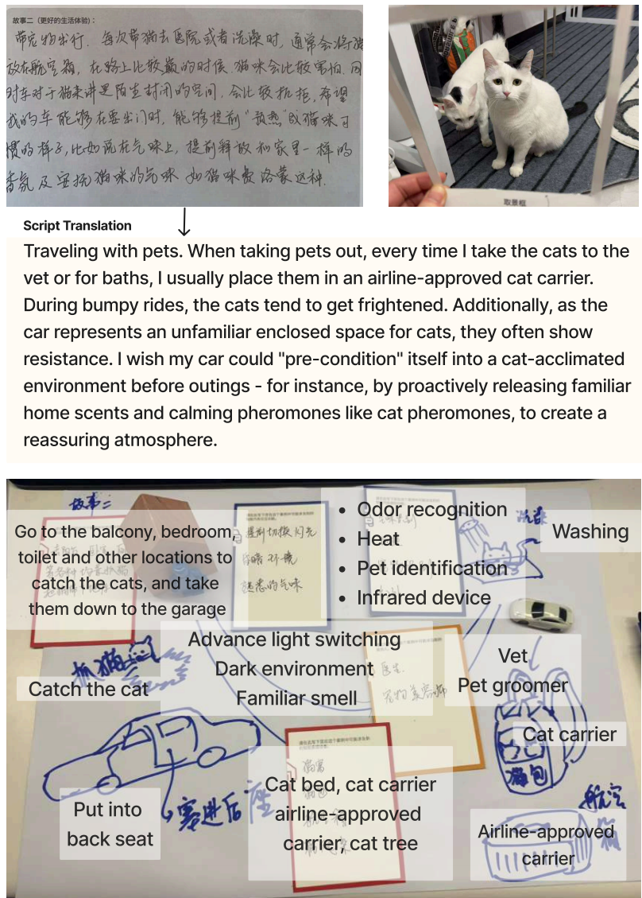
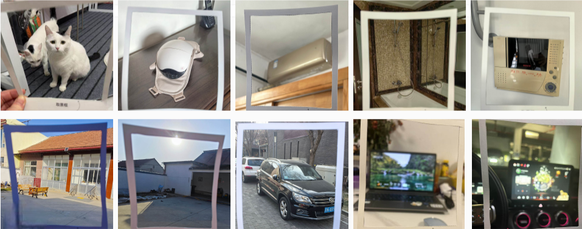

2025 / Design futuring
[Design Futuring] When My Car Whispers Secrets to My Home - Speculating about Cars, Homes, and the Lives In-between
What if your car talked quietly to your home, exchanging secrets about where you’ve been—or where you might go next? With cars and homes becoming smarter and increasingly interconnected, this isn’t merely speculative. Yet, much of the current discussion remains centered on technological integration rather than the messy realities of everyday life.
This project explores Human Vehicle Home (HVH) integrated intelligent experiences, where smart vehicles and smart homes become mobile and stationary nodes in a unified ecosystem. Instead of starting from technical feasibility, we treat HVH as a human centred question: what kinds of everyday benefits do people actually want from vehicle home connectivity, and what kinds of socio technical risks become amplified when the boundaries between “car” and “home” dissolve.
Human–Vehicle–Home Probe
Future envisioning for integrated vehicle–home ecosystems is often difficult for people who are not technical experts: imagination can become detached from everyday routines, or participants may feel uncertain about the “technological frame” they are supposed to critique. To address this, we developed a Human–Vehicle–Home Probe Pack that helps participants build speculative stories from within their lived spaces, travel habits, and relationships, rather than from abstract feature lists.

The probe pack is a designed toolkit inspired by cultural probes, combining generic miniature models, a privacy-aware scene-framing device, fillable thematic prompt cards, yarn, and a workbook. The models (people, cars, living spaces) are deliberately featureless so participants can quickly stage spatial relations without getting trapped in aesthetics; the scene-framing tool captures contextual images while allowing focus control for privacy; the thematic cards are organised to prompt critical aspects of HVH scenarios (stakeholders, car perceptual capabilities, interaction modes, environmental features, and smart home integration); and yarn encourages participants to externalise imagined data flows and their own technical assumptions. In practice, the pack operates as a “ticket to talk,” turning participants’ canvases, photos, and workbook narratives into concrete opportunities (cross space well being, activity and memory continuity, interpersonal support) and challenges (privacy and security escalation, shared usage conflicts under uneven literacy, safety and fail safe needs, infrastructure disparities across regions).


This paper was published at CHI 2025 EA → Read it here View the workbooks and thematic cards.
Xiao Xue, Shuang He, Keqi Chen, Ruoxin Qiao, Weitai Xu, Enyang Wang, Yaxuan Zhao, Xinyi Fu